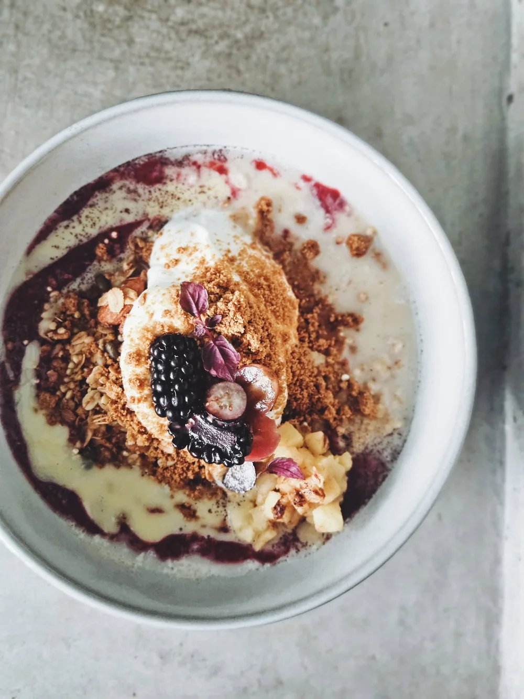
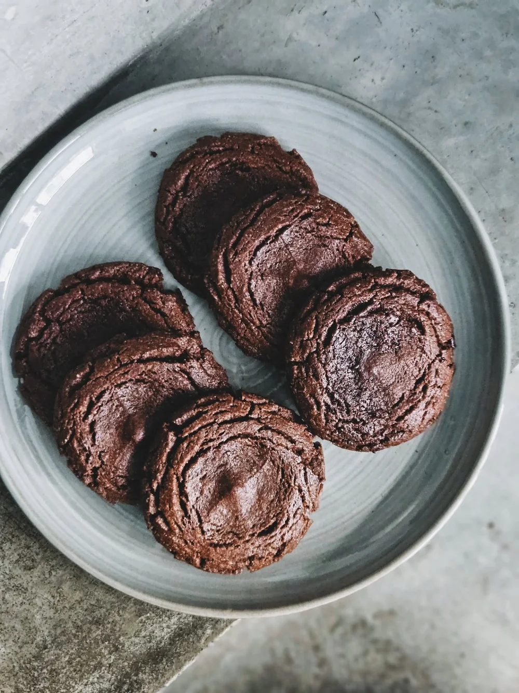
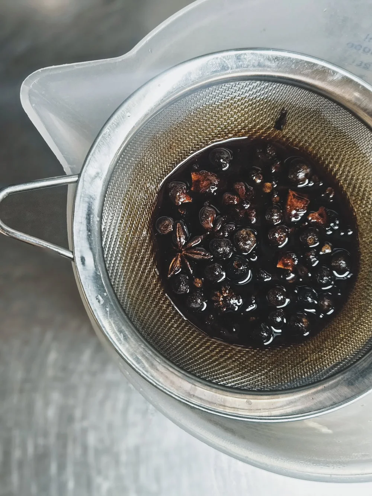
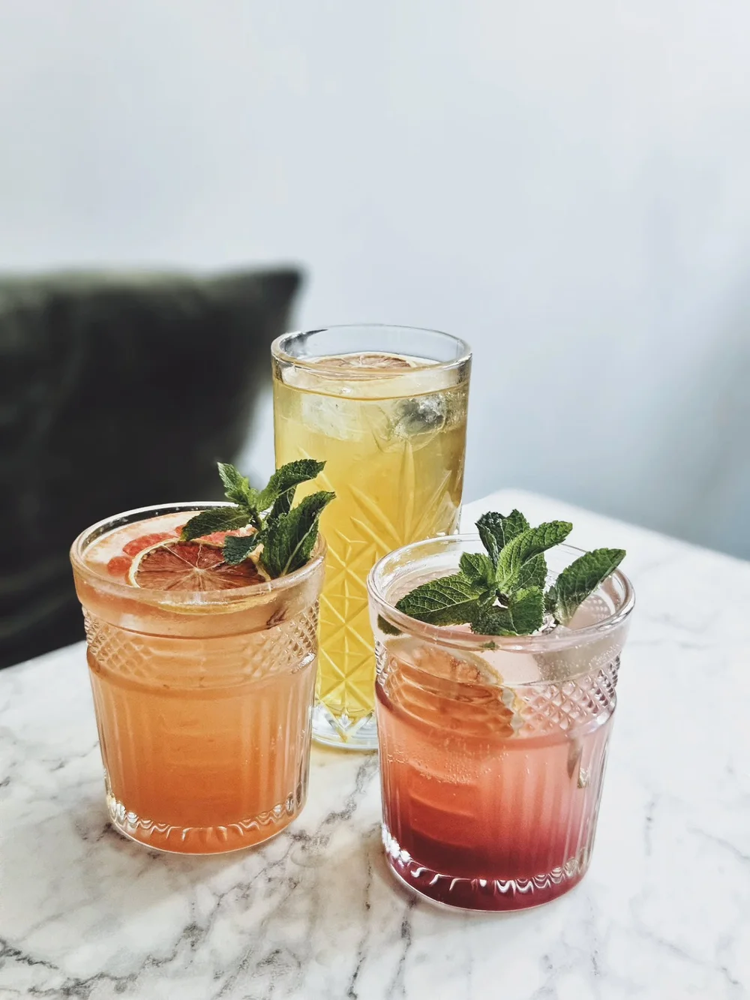
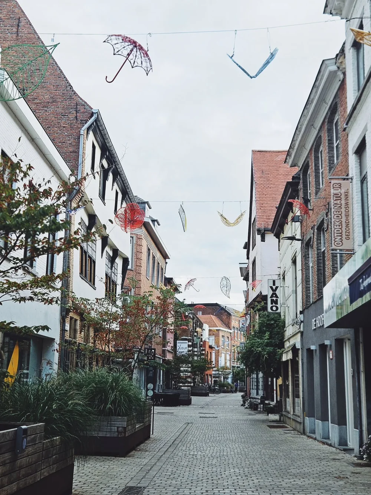
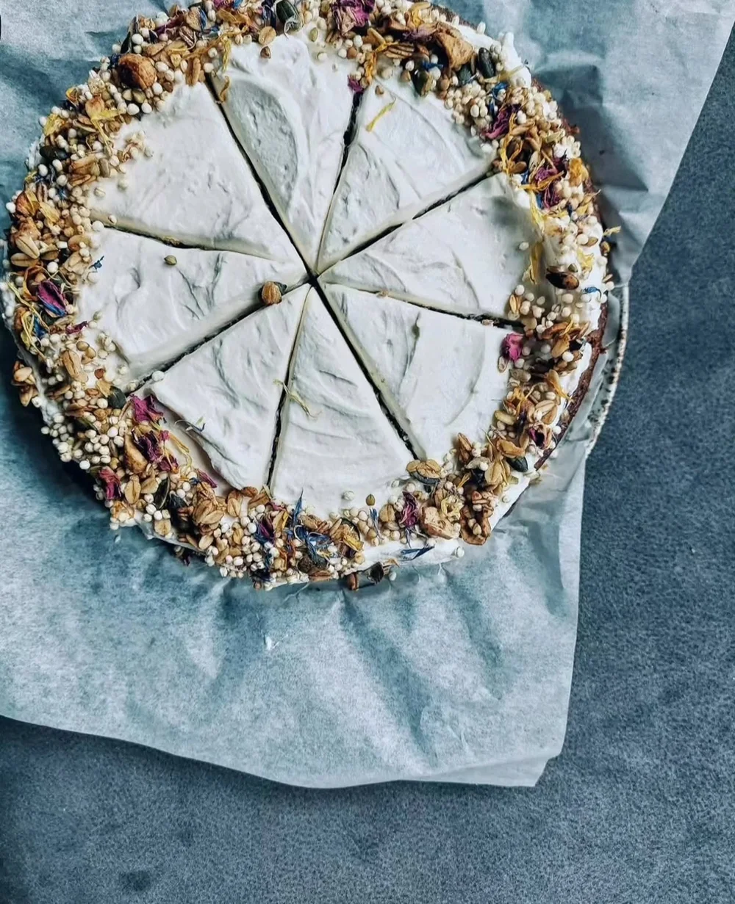
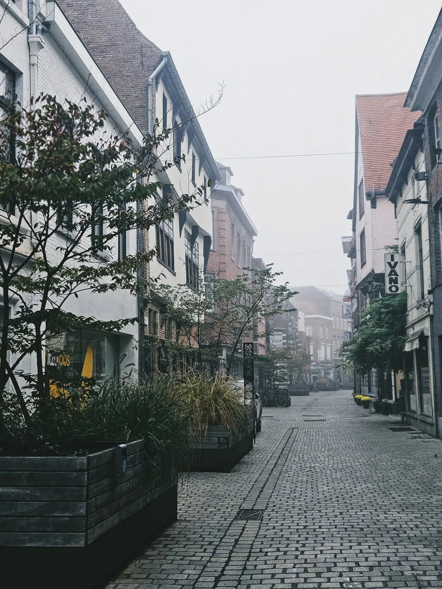

een kommeke havermout
Huisgemaakte pruimencompote, bramencoulis, hazelnoot- en kardemomgranola, bosbessen en gepofte druifkes.
"da's lek ne knuffel van de herfst zelf"Ontbijt en lunch in de Ketelstraat, aan 26 plaatsen. Alles wat op je bord ligt maken we zelf, tot de kombucha in je glas toe.

De kaart volgt het seizoen. Nu is het herfst, dus warme kommen, compote en koekskes uit de oven. Een greep uit wat er de voorbije weken op tafel kwam.
Huisgemaakte pruimencompote, bramencoulis, hazelnoot- en kardemomgranola, bosbessen en gepofte druifkes.
"da's lek ne knuffel van de herfst zelf"
Huisgemaakte tapenade van gegrilde paprika en walnoot, met geschaafde venkel. Lunch is served.

Romig, met paarse compote, een krokante crumble en een braam erop.

Turn that frown upside down. Vers gebakken, voor bij je koffie.

Zoet, maar met een goed geweten. Wat er ligt, wisselt mee met het seizoen.
Onze kombucha brouwen we zelf. Kneusjes fruit uit de keuken, kruiden en specerijen gaan op suiker en worden een siroopje. Geen poeders, geen synthetische smaakjes.




"pumpkin spice siroop. jawel, die maken we zelf, zonder poederkes of van dieje synthetische tuggel. en da proeft ge."
butan. op InstagramZo noemen we de Ketelstraat, waar je ons vindt. Bij goed weer staat er ook een terrasje buiten.


"Deze ontbijt/lunch plek kan ik iedereen aanraden. De borden zijn net kunstwerken, niet alleen mooi maar nog super lekker ook. Alles is huisgemaakt, zelfs tot en met de Kombucha die ze zelf brouwen."
Jack VanaudenhoveGoogle"De allerliefste mensen die deze zaak uitbaten, enorm veel passie voor lekker eten en een huiselijke liefdevolle sfeer! Enige ontbijt en lunch zaak die er toe doet in Diest en omstreken!"
Nonni VerheyenGoogle"Als je graag eens iets anders dan "standaard" wil eten ben je hier aan het goede adres. Het eten wordt er met veel liefde klaargemaakt."
Pascale SiemonsGoogleKetelstraat 22, 3290 DiestReserveren kan niet. Kom gewoon binnen, er is plaats voor 26.

Ik maakte deze demo voor jullie om te tonen wat er kan. Na een kort gesprek maak ik er iets veel persoonlijkers van, helemaal naar jullie wens.
Vrijblijvend. Ik kom langs of we bellen.
Op maat, op jullie eigen domein.
Geen voorschot. Jullie betalen pas als alles klaar is.
Hosting, domeinnaam en kleine wijzigingen, zoals nieuwe openingsuren.
Omdat een voorbeeld meer zegt dan een mail. Zo zien jullie meteen wat er kan, en het kost jullie niets.
Nee. Het gesprek is vrijblijvend. Vinden jullie het niks, dan is het daarmee gedaan.
Na ons gesprek staat jullie site binnen 10 tot 14 dagen online.
Zeker. Jullie domeinnaam kan gewoon blijven, de nieuwe site komt in de plaats van de oude.
Nee, dat doe ik op basis van ons gesprek. Eigen foto's zijn mooi meegenomen, maar niet nodig om te starten.